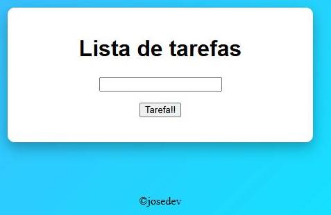
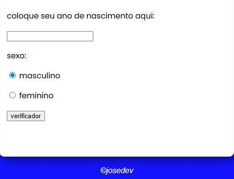

José Victor
Desenvolvedor Front-End
Desenvolvedor Front-End
Olá! Meu nome é José Victor e sou um desenvolvedor Front-End apaixonado por tecnologia e inovação. Desde cedo me interessei por programação e pela criação de interfaces modernas, intuitivas e funcionais, que proporcionam uma experiência agradável para os usuários. Atualmente, estudo intensamente HTML, CSS e JavaScript, além de explorar ferramentas e frameworks que me permitam evoluir como desenvolvedor web. Busco constantemente aprender novas tecnologias, aprimorar minhas habilidades e desenvolver projetos que unam design e usabilidade. Gosto de trabalhar em projetos que desafiem minha criatividade e lógica, transformando ideias em soluções práticas e elegantes. Cada projeto é uma oportunidade de crescer, aprender e experimentar novas abordagens de desenvolvimento. Estou no início da minha jornada profissional, mas com muita motivação para evoluir, criar projetos reais e colaborar com equipes que valorizem inovação e qualidade. Meu objetivo é me tornar um desenvolvedor Front-End completo, capaz de transformar conceitos em experiências digitais marcantes. Fora da programação, sou curioso, dedicado e sempre em busca de aprendizado contínuo. Acredito que a tecnologia pode transformar vidas e quero contribuir para criar soluções que impactem positivamente o dia a dia das pessoas.
Site criado para apresentar produtos e facilitar o contato com clientes. Desenvolvido com HTML, CSS e JavaScript.

– App web para organizar tarefas com HTML, CSS e JavaScript. Simples, rápido e funcional.

Pequeno app web que checa a idade do usuário e exibe mensagens de acesso apropriadas. Desenvolvido com HTML, CSS e JavaScript, simples e funciona